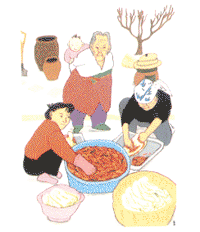

ソウル・居酒屋８８（パルパル）の夢
渡邉真弓
「８８」（パルパル）は、坂の途中にあった。
ここからスイッチバックのように、さらに上へと伸びるもう一本の急な坂の、ちょうど横腹に位置していた。そのため、他の商店と軒を並べていながら「８８」のドアだけは、まるでガード下のだまし絵のようだった。
買い物といえば、この狭い通りに並ぶ店や露店をよく利用した。銭湯から出てきた顔見知りのアジュンマ（おばちゃん）たちと立ち話もした。そんなアジュンマたちの姿が似合う、ゴマ油の香り漂う通
りが寝静まる頃、居酒屋「８８」のドアは開く。
店はぐるりと地下に向かって掘られている。しかしひとたび中に降りてみれば、怪しげなイメージとは裏腹に、素朴でこのうえない安心感に包まれる。広さはせいぜい１２、３畳。漆喰壁に直接、墨字でメニューと値段が書かれ、それがこの店の唯一のインテリアになっている。何かに似ていると思ったら、子供の頃、電気スタンドを引き込んで押し入れに作った隠れ家そっくりだ。
ここの名物は、店の名を取った「８８うどん」。出来合いの麺を出す店が多くなっているなかで、「８８」は手打ち麺が自慢だ。そもそも私が「８８」に通
うようになったのも、夫の「手打ちうどん食べに行こう」という言葉に誘われてのことだった。上州育ちで、うどんと言えば母の手打ちしか知らない私には、これは魅力的な響きがあった。食べてみれば何ということはない塩仕立ての煮込みうどんだったが、そこがまさにオンマ（かあちゃん）の味だった。他にはトゥブキムチ（薄切りの豆腐にキムチを添えたもの。載せて食べる）、トゥェンジャンチゲ（具だくさんのみそ汁。おかずにもなる）など、２、３００円で食べられる韓国のお定まりメニューが並ぶ。なかでもヤチェトゥイギム（野菜天ぷら）やピンデトック（韓国風お好み焼き）は薄平ったいザルに載り、かめ入りのどぶろくにはひょうたんのひしゃくが添えられるという具合に、野趣に富んだ盛りつけが、味を引き立てていた。
我が家のアパートからも徒歩で２分足らずということもあって、この穴蔵のような居酒屋が、夫婦で深夜こっそり通
う、とっておきの場所になった。
通い始めた頃は、慣れない韓国生活のため、ふと弱気になって、酒の出し入れ以外は詩に読みふける店の主人の頭越しに、にぎやかな厨房をぼんやりとみつめる日もあった。そこにはすべて心得た様子で、テキパキと料理を作る３人のたくましいアジュンマの姿があった。昼間、街の勢いにはじき飛ばされ続けていても、夜中ここにもぐり込んでアジュンマの手料理をつつきながらインサムトンドンジュ（朝鮮人参入りどぶろく）を飲めば、まんざら悪くない一日だったと思えた。
偶然出くわしたあのいまいましいキョンスと対決したのも、ここ「８８」だった。私はナクチポックム（たこの辛子みそいため）を注文した。特に強気でいく時には、歯ごたえのある料理に限る。奥歯でタコをギュウギュウかみ切りながら、真露（チンロ・韓国焼酎）の助けもあって、真っ赤な口からハングルが飛び出す。
「キョンス！ 前に日本語なんて韓国語より簡単って言ってたけど、そろそろ日本語できてもいい頃じゃない？」
こうした「８８」での出来事は、夫との晩酌から、記念すべきキョンスとのハングル勝負まで、すべて大切な思い出だが、親しい友人たちにさえも話すことはなかった。夫婦とっておきの場所を教えたくないというだけでなく、あの漆喰壁の中で起きたことは、いつも翌朝には夢のように現実味がなく、地上には持ち出せない気がしたからだ。
一度だけ、深夜「８８」に向かう私を友人に見られたことがある。
「シンチョンの街にご主人を迎えにでも行ったんでしょ？ それにしても不思議だったなあ。すぐに後を追いかけたのに、坂のところで見失っちゃって……もう影も形もなかったんですからね。いったいどこの脇道に入ったんです？」
なぞはなぞのまま。「８８」は、そんな店だった。
渡邉真弓（わたなべ・まゆみ） 会社員の夫に伴って、4歳と3歳の娘とともに韓国に渡り、ソウル市西橋洞で暮らす。明るい笑いと涙に満ちたその生活を綴った『韓国のおばちゃんはえらい！』が話題沸騰中。
